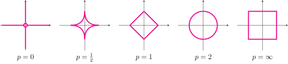

The Sparse Regression Task
Contents
The Sparse Regression Task#
We already discussed that there are infinitely many regression solvers \(\beta\) if \(p>n\). Usually, we can avoid this situation by choosing a simple basis function class, for example affine functions. However, for various types of datasets it’s quite common that there are more features than observations. For example in gene expression analysis, collecting patient data (observations) is costly, while the number of features (the genes) is big. Such datasets usually indicate for each observation (patient) the expression levels of their genes. The patients might have a specified disease, and the task if to find out why some patients live longer with this disease than others. The target would then be something like the survival time after a diagnosis has been made.
D |
Gene 1 |
Gene 2 |
\(\ldots\) |
Gene 60,000 |
\(y\): survival time |
|---|---|---|---|---|---|
1 |
0.00 |
2.75 |
12.93 |
0.9 |
|
2 |
0.00 |
0.00 |
16.26 |
0.7 |
|
\(\vdots\) |
\(\vdots\) |
\(\vdots\) |
\(\vdots\) |
\(\vdots\) |
\(\vdots\) |
489 |
0.00 |
5.38 |
0.00 |
0.8 |
When it comes to the analysis of a gene expression dataset, we might want to explore more than just the prediction of the target survival time. The identification of the relevant features is also of interest to guide medical research by pointing out the relevant genes.
The regression vector \(\bm{\beta}\) encodes which features are relevant for prediction by nonnegative entries:
The number of nonnegative entries is given by the \(L_0\)-‘norm’:
Note that the \(L_0\)-‘norm’ is not a real norm. We define the sparse regression task to find the regression model that minimizes the prediction error while using only \(s\) features.
Task (Sparse Regression)
Given a dataset of \(n\) observations
the design matrix \(X\in\mathbb{R}^{n\times p}\), where \(X_{i\cdot}=\bm\phi(\vvec{x}_i)^\top\) and the integer \(s\).
Find the regression vector \(\bm\beta\), solving the following objective
Return the predictor function \(f:\mathbb{R}^d\rightarrow\mathbb{R}\), \(f(\vvec{x})=\bm\phi(\vvec{x})^\top\bm\beta\).
Adding the seemingly simple sparsity constraint \(\lVert\beta\rVert_0\leq s\) makes the resulting regression task unfortunately computationally much more difficult. An issue is that the sparse regression objective is not convex, because the feasible set \(\{\beta\mid \lVert\bm{\beta}\rVert_0\leq s\}\) is not convex. But it’s even worse than that, because the \(L_0\)-‘norm’ is not a continuous function. The property of the constraining function is relevant, since the optimizers subject to constraints rely on integrating the constraints into the objective function, as seen in the dual formulation. Noncontinuous objective functions are bad for all the optimizers that we know, since they all rely on gradient information, which in turn relies on the assumption that a sufficiently small change in a data point has a small effect on the function value. Noncontinuous functions can differ vastly from one point to an infinitesimal small change from that point. That makes the local information about the directions in which the objective increases and decreases useless, and this means in turn that we are closer to a combinatorial optimization problem, where we just have to try various parameter constellations (e.g., various selections of features).
Relaxing the sparsity constraint#
The \(L_0\)-‘norm’ is a natural extension from the \(L_p\)-norms, which are actual norms for \(p\geq 1\). Those are defined as follows:
If \(p\in (0,1)\), then we can compute the value defined above, but it’s not a real norm. For \(p=0\) we can’t compute the value above directly, because we would have to divide by zero. The \(L_0\)-‘norm’ is given by computing the formula above for \(p=0\) without the root term. That is, we have \(\lim_{p\rightarrow 0}\lVert\mathbf{x}\rVert_p^p=\lVert \mathbf{x}\rVert_0\). For optimization purposes this is good enough, since it means that we can relax the constraint \(\lVert \mathbf{x}\rVert_0\leq s\) with the constraint \(\lVert \mathbf{x}\rVert_p^p \leq s\) for a small \(p\approx 0\), or equivalently \(\lVert \mathbf{x}\rVert_p \leq s^{1/p}\).
The plots below visualize the (relaxed) feasible sets of the sparse regression task for \(s=1\). The red lines indicate the boundary of the \(p\)-norm balls \(\{\mathbf{x}\mid \lVert \mathbf{x}\rVert_p\leq 1\}\).

On the left we observe that the \(L_0\)-ball, containing the axes except for the point zero, progresses to a star shape for \(p=0.5\) and further to a diamond for \(p=1\), a circle for the Euclidean norm \((p=2)\), and a rectangle for the infinity norm. The \(L_0\)-ball is more suitably approximated for small values of \(p\), but those \(L_p\)-balls are not convex, resulting again in a nonconvex objective. We see this for the \(p=0.5\)-ball: the line connecting the points \((0,1)\) and \((1,0)\) is outside of the ball. So, a popular choice is to relax the \(L_0\)-norm with the \(L_1\)-norm, that is closest to the \(L_0\)-norm with a convex unit ball.
But how do we optimize subject to the constraints?

Going over the dual is in practice often difficult. In particular if the resulting Lagrangian is not continuously differentiable, solving the dual becomes often impossible. A popular approach is to simply penalize the objective function with the constraints.
That is, given the \(L_p\)-constrained regression problem for \(s>0\)
we can reformulate this objective into an unconstrained one by means of the Lagrangian. If the duality gap is zero, there exists a parameter \(\lambda>0\) such that the objective above is solved by
The question is now, which \(p\)-norm we are going to choose. We have here a trade-off between \(p\)-norms that are well-optimizable, since they are differentiable, or even smooth, and \(p\)-norms that are not so easily optimizable, but that are close to the behavior of the \(L_0\)-norm in their penalization behavior. We compare the \(p\)-norms with regard to their optimizability below:
norm |
continuous |
differentiable |
|---|---|---|
\(g(\vvec{x})=\lVert \vvec{x}\rVert^2\) |
✅ |
✅ |
\(g(\vvec{x})=\lvert \vvec{x}\rvert\) |
✅ |
❌ |
\(g(\vvec{x})=\lVert \vvec{x} \rVert_0\) |
❌ |
❌ |
We see that the \(L_0\)-norm is rather nasty to optimize, because it has a point of discontinuity at zero (see also the plot below), where it is also not differentiable (continuity follows from differentiability). The \(L_1\)-norm is at least contiuous everywhere, but it has a point of nondifferentiability at zero. Finally, the squared \(L_2\)-norm is continuous and differentiable everywhere. Note, that we use the squared \(L_2\) norm because the \(L_2\)-norm itself is also not differentiable at zero (for \(x\in\mathbb{R}\), we have \(\lVert x\rVert = \lvert x\rvert\)). Hence, the \(L_2\)-norm is squared (as it is also done for the RSS), since squaring a function in an objective doesn’t change the set of minimizers.
The plot below allows for a comparison of the penalization behavior of the various norms.

We observe the behavior of the \(L_0\)-‘norm’, adding a penalization term of one for every nonzero entry of \(x\). Regarding optimization, we can imagine that an \(L_0\) penalization term does not help when using numerical methods like gradient descent, since no information is given locally in what direction the penalization term is minimized. That is different for the \(L_1\) and \(L_2\) norms, whose negative gradients all point towards zero.
The question arises now how the regression solutions change when adding \(L_1\) or \(L_2\) penalization terms, and how we can obtain those solutions. This, we are going to discuss in the next posts.